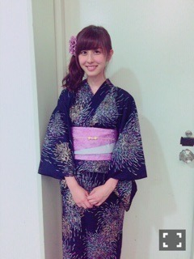

| 2015/08 28 Fri | アメリカンフットボ ールマガジン発売！ (´>∀<｀)ゝ |
ちはるーむへようこそ！
今日は28日！ということで
ベースボール・マガジン社発刊の
「アメリカンフットボールマガジン Powerd by TURNOVER」
が発売されます！！
復刊号を有難いことに表紙を飾らせていだたき( ;o; )
しかも女性初の表紙ということで( ;o; )
すごく嬉しいですヽ(；；)丿
表紙だけでなく、私自身のインタビューも載っているので
ぜひ手に取っていただきたいです！
乃木坂ファンの方にアメフトを知ってもらって
アメフトファンの方に乃木坂を知ってもらって
私がその架け橋になれるように。
アイドルと、アメフトの橋になりたい。
皆さんぜひ読んでね(﹡ˆ ˆ﹡)
一昨日で、大阪でのライブが終わり、
地方でのライブは全て終わりました！！
いやーあっという間だった14公演。
たくさんの熱気を感じた14公演。
素敵な時間を過ごすことができました！
来てくれたみなさん、応援してくれた皆さん、
本当にありがとうございました！！
神宮でも、素敵な時間を過ごせるように。
たくさんの方に満足してもらえるように。
また来年も来たいって思ってもらえるように。
全力で楽しんで！！
全力で頑張ります！！

大阪で流れたVTRではこう言わせてもらいました。
「負けたくない。」
他人っていうよりは、自分自身に。
この状況に。妥協したくない。
負けないぞ！！
MCで噛みすぎてすごく申し訳なかったから
これからはああいうことのないように...(> <)笑
顔真っ赤になったし、
見苦しい部分お見せしました...(> <)笑
喋りも上手くなりたい！！
神宮には、家族、親戚はもちろん、
友達もたくさん来てくれるので
良いところ見せられるようにしたいな♡！
乃木中で披露したハッピーターンは
返し跳びの2倍速ver.だと
勝手に思っております。
小学校の頃にやった返し跳びではなくて
2倍速なのがハッピーターン！
ということで覚えてください(｡･o･｡)ﾉ
(2倍速だったかどうかも定かではないですが気にしないでね)

神宮来てくれる方、アメリカンフットボールマガジン買ってから行くと時間つぶし出来るよ(｡･o･｡)ﾉ
神宮来れない方、アメリカンフットボールマガジン買って家で応援してくれると私に届くよ(｡･o･｡)ﾉ
(｡･o･｡)ﾉにやり
赤と青のサイリウム、タオル、うちわ...
見つけるからね！！(﹡ˆ ˆ﹡)
待ってます！！
斎藤ちはる
コメント(403)
2015/08/28 13:36